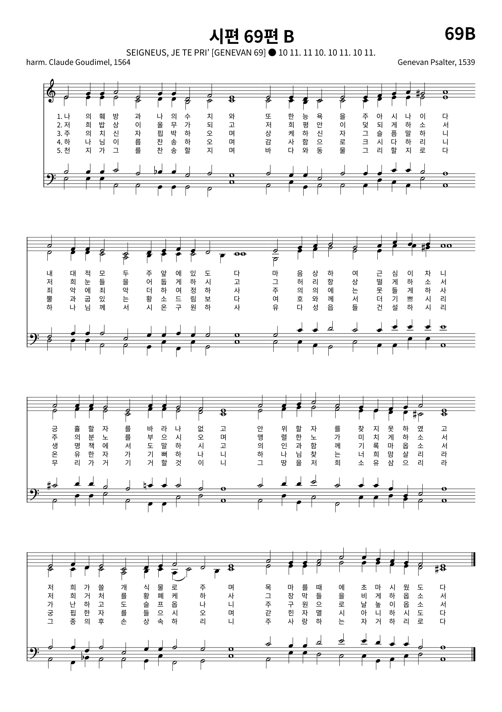

Psalm 69B
SEIGNEUS, JE TE PRI’ [GENEVAN 69] · 10 11. 11 10. 10 11. 10 11.
English title: Save Me, O God! The Waters Rise and Leap
Tune: Genevan Psalter, 1539 · Harmony: Claude Goudimel, 1564 · Lyrics: Korean adaptation of Psalm 69 from the Korean Revised Version (AI draft adaptation · not yet theologically reviewed) · 5 stanzas
Psalm 69 is divided into 2 tunes: A B · This tune contains stanzas 7–11 of the Psalm 69 lyrics.
Score PDF MusicXML (for printing) MusicXML (for accompaniment, with prelude and repeats) Read Psalm 69 (Korean Revised Version)
Score
← Psalm 69A ListAccompaniment (in preparation)Psalm 70 →
Lyrics (Korean)
Stanza 1
나의 훼방과 나의 수치와
또한 능욕을 주 아시나이다
내 대적 모두 주 앞에 있도다
마음 상하여 근심이 차니
긍휼할 자를 바라나 없고
안위할 자를 찾지 못하였고
저희가 쓸개 식물로 주며
목마를 때에 초 마시웠도다
나의 훼방과 나의 수치와
또한 능욕을 주 아시나이다
내 대적 모두 주 앞에 있도다
마음 상하여 근심이 차니
긍휼할 자를 바라나 없고
안위할 자를 찾지 못하였고
저희가 쓸개 식물로 주며
목마를 때에 초 마시웠도다
Stanza 2
저희 밥상이 올무가 되고
저희 평안이 덫 되게 하소서
저희 눈들을 어둡게 하시고
그 허리 항상 떨게 하소서
주의 분노를 부으시오며
맹렬한 노가 미치게 하소서
저희 거처를 황폐케 하사
그 장막들을 비게 하옵소서
저희 밥상이 올무가 되고
저희 평안이 덫 되게 하소서
저희 눈들을 어둡게 하시고
그 허리 항상 떨게 하소서
주의 분노를 부으시오며
맹렬한 노가 미치게 하소서
저희 거처를 황폐케 하사
그 장막들을 비게 하옵소서
Stanza 3
주의 치신 자 핍박하오며
상케 하신 자 그 슬픔 말하니
죄악에 죄악 더하여 정하사
주의 의에는 못 들게 하사
생명책에서 도말하시고
의인과 함께 기록 마옵소서
가난하고도 슬프옵나니
주 구원으로 날 높이옵소서
주의 치신 자 핍박하오며
상케 하신 자 그 슬픔 말하니
죄악에 죄악 더하여 정하사
주의 의에는 못 들게 하사
생명책에서 도말하시고
의인과 함께 기록 마옵소서
가난하고도 슬프옵나니
주 구원으로 날 높이옵소서
Stanza 4
하나님 이름 찬송하오며
감사함으로 크시다 하리니
뿔과 굽 있는 황소 드림보다
여호와께서 더 기쁘시리
온유한 자가 기뻐하나니
하나님 찾는 너희 맘 살리라
궁핍한 자를 들으시오며
갇힌 자 멸시 아니하시도다
하나님 이름 찬송하오며
감사함으로 크시다 하리니
뿔과 굽 있는 황소 드림보다
여호와께서 더 기쁘시리
온유한 자가 기뻐하나니
하나님 찾는 너희 맘 살리라
궁핍한 자를 들으시오며
갇힌 자 멸시 아니하시도다
Stanza 5
천지가 그를 찬송할지며
바다와 동물 그리할지로다
하나님께서 시온 구원하사
유다 성읍들 건설하시리
무리가 거기 거할 것이니
그 땅을 저희 소유 삼으리라
그 종의 후손 상속하리니
주 사랑하는 자 거하리로다
천지가 그를 찬송할지며
바다와 동물 그리할지로다
하나님께서 시온 구원하사
유다 성읍들 건설하시리
무리가 거기 거할 것이니
그 땅을 저희 소유 삼으리라
그 종의 후손 상속하리니
주 사랑하는 자 거하리로다